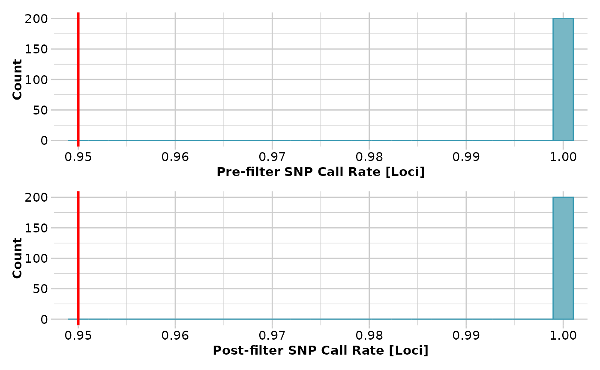
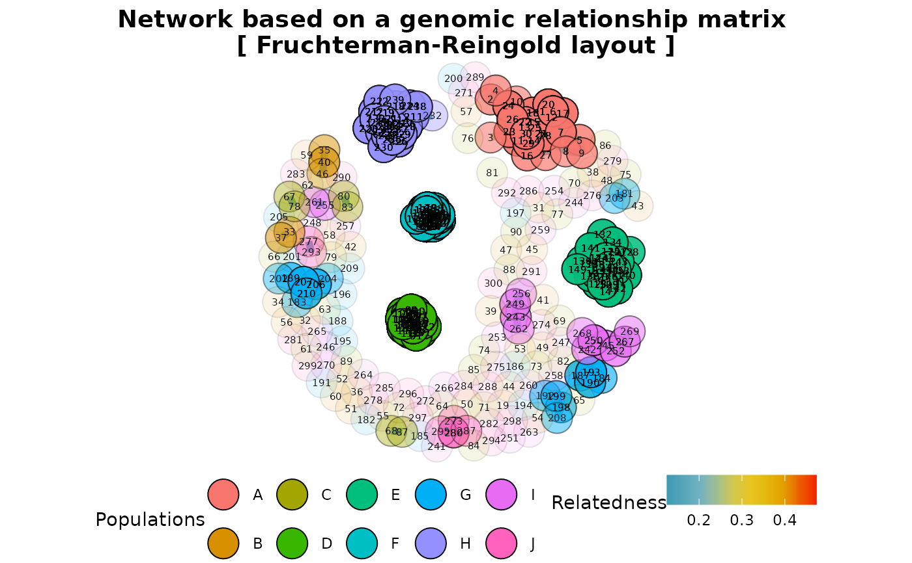

gl.grm.network.RdThis script takes a G matrix generated by gl.grm and represents
the relationship among the specimens as a network diagram. In order to use
this script, a decision is required on a threshold for relatedness to be
represented as link in the network, and on the layout used to create the
diagram.
gl.grm.network(
G,
x,
method = "fr",
node.size = 8,
node.label = TRUE,
node.label.size = 2,
node.label.color = "black",
link.color = NULL,
link.size = 2,
relatedness_factor = 0.125,
title = "Network based on a genomic relationship matrix",
palette_discrete = NULL,
save2tmp = FALSE,
verbose = NULL
)A genomic relationship matrix (GRM) generated by
gl.grm [required].
A genlight object from which the G matrix was generated [required].
One of 'fr', 'kk', 'gh' or 'mds' [default 'fr'].
Size of the symbols for the network nodes [default 8].
TRUE to display node labels [default TRUE].
Size of the node labels [default 3].
Color of the text of the node labels [default 'black'].
Color palette for links [default NULL].
Size of the links [default 2].
Factor of relatedness [default 0.125].
Title for the plot [default 'Network based on genomic relationship matrix'].
A discrete palette for the color of populations or a list with as many colors as there are populations in the dataset [default NULL].
If TRUE, saves any ggplots and listings to the session temporary directory (tempdir) [default FALSE].
Verbosity: 0, silent or fatal errors; 1, begin and end; 2, progress log ; 3, progress and results summary; 5, full report [default 2 or as specified using gl.set.verbosity].
A network plot showing relatedness between individuals
The gl.grm.network function takes a genomic relationship matrix (GRM) generated by the gl.grm function to represent the relationship among individuals in the dataset as a network diagram. To generate the GRM, the function gl.grm uses the function A.mat from package rrBLUP, which implements the approach developed by Endelman and Jannink (2012).
The GRM is an estimate of the proportion of alleles that two individuals have in common. It is generated by estimating the covariance of the genotypes between two individuals, i.e. how much genotypes in the two individuals correspond with each other. This covariance depends on the probability that alleles at a random locus are identical by state (IBS). Two alleles are IBS if they represent the same allele. Two alleles are identical by descent (IBD) if one is a physical copy of the other or if they are both physical copies of the same ancestral allele. Note that IBD is complicated to determine. IBD implies IBS, but not conversely. However, as the number of SNPs in a dataset increases, the mean probability of IBS approaches the mean probability of IBD.
It follows that the off-diagonal elements of the GRM are two times the kinship coefficient, i.e. the probability that two alleles at a random locus drawn from two individuals are IBD. Additionally, the diagonal elements of the GRM are 1+f, where f is the inbreeding coefficient of each individual, i.e. the probability that the two alleles at a random locus are IBD.
Choosing a meaningful threshold to represent the relationship between individuals is tricky because IBD is not an absolute state but is relative to a reference population for which there is generally little information so that we can estimate the kinship of a pair of individuals only relative to some other quantity. To deal with this, we can use the average inbreeding coefficient of the diagonal elements as the reference value. For this, the function subtracts 1 from the mean of the diagonal elements of the GRM. In a second step, the off-diagonal elements are divided by 2, and finally, the mean of the diagonal elements is subtracted from each off-diagonal element after dividing them by 2. This approach is similar to the one used by Goudet et al. (2018).
Below is a table modified from Speed & Balding (2015) showing kinship values, and their confidence intervals (CI), for different relationships that could be used to guide the choosing of the relatedness threshold in the function.
|Relationship|Kinship|95 |Identical twins/clones/same individual | 0.5 | - |
|Sibling/Parent-Offspring | 0.25 | (0.204, 0.296)|
|Half-sibling | 0.125 | (0.092, 0.158)|
|First cousin | 0.062 | (0.038, 0.089)|
|Half-cousin | 0.031 | (0.012, 0.055)|
|Second cousin | 0.016 | (0.004, 0.031)|
|Half-second cousin | 0.008 | (0.001, 0.020)|
|Third cousin | 0.004 | (0.000, 0.012)|
|Unrelated | 0 | - |
Four layout options are implemented in this function:
'fr' Fruchterman-Reingold layout layout_with_fr (package igraph)
'kk' Kamada-Kawai layout layout_with_kk (package igraph)
'gh' Graphopt layout layout_with_graphopt (package igraph)
'mds' Multidimensional scaling layout layout_with_mds (package igraph)
Endelman, J. B. , Jannink, J.-L. (2012). Shrinkage estimation of the realized relationship matrix. G3: Genes, Genomics, Genetics 2, 1405.
Goudet, J., Kay, T., & Weir, B. S. (2018). How to estimate kinship. Molecular Ecology, 27(20), 4121-4135.
Speed, D., & Balding, D. J. (2015). Relatedness in the post-genomic era: is it still useful?. Nature Reviews Genetics, 16(1), 33-44.
t1 <- possums.gl
# filtering on call rate
t1 <- gl.filter.callrate(t1)
#> Starting gl.filter.callrate
#> Processing genlight object with SNP data
#> Recalculating Call Rate
#> Removing loci based on Call Rate, threshold = 0.95
#>

#> Completed: gl.filter.callrate
#>
# relatedness matrix
res <- gl.grm(t1,plotheatmap = FALSE)
#> Starting gl.grm
#> Processing genlight object with SNP data
#> Completed: gl.grm
#>
# relatedness network
res2 <- gl.grm.network(res,t1,relatedness_factor = 0.125)
#> Starting gl.grm.network
#> Processing genlight object with SNP data
#>

#> Completed: gl.grm.network
#>